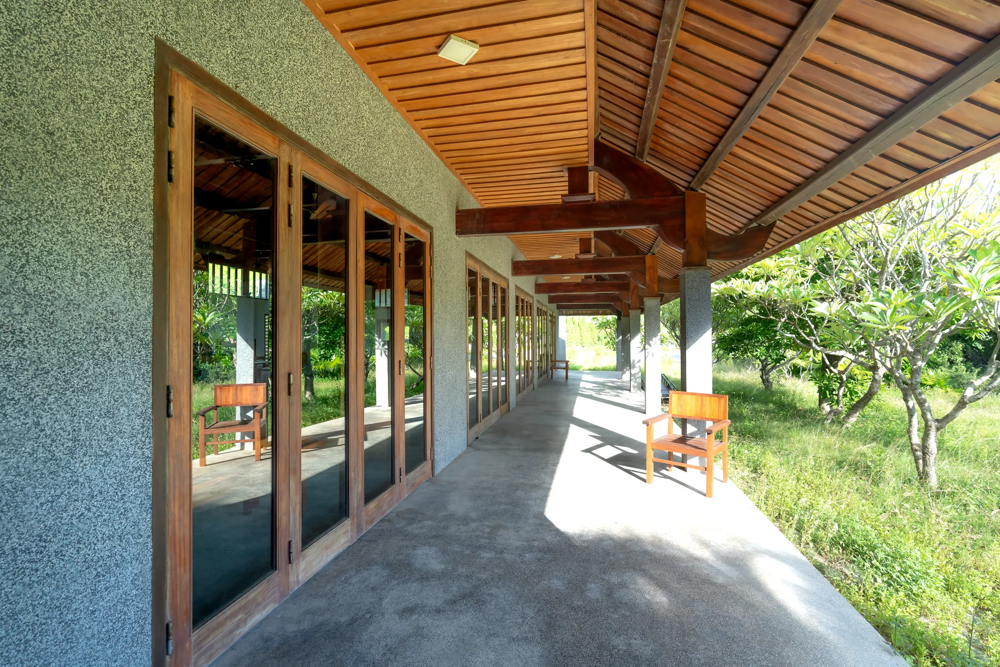
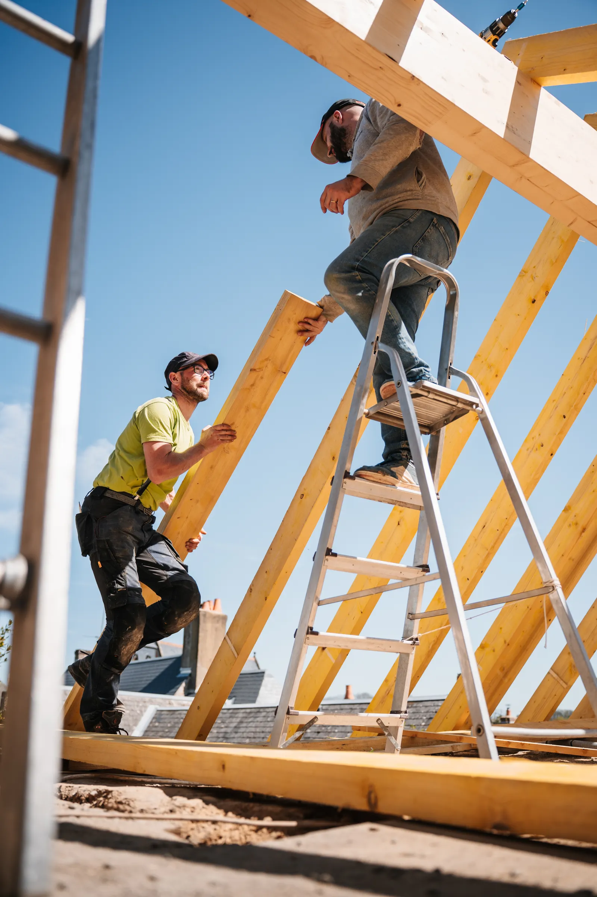
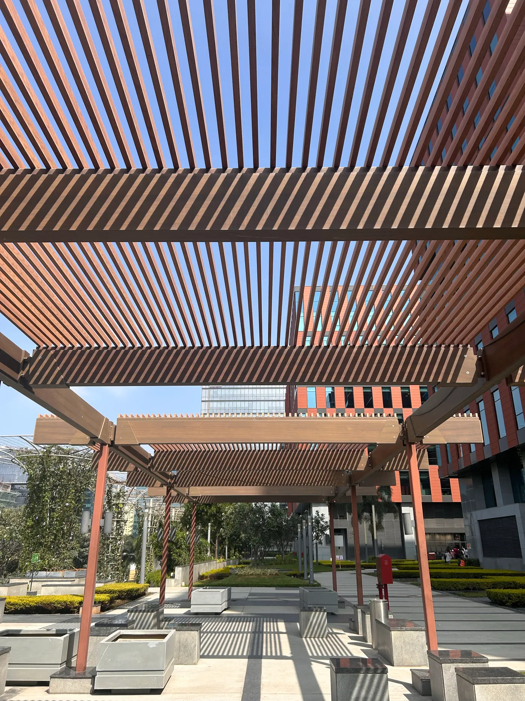
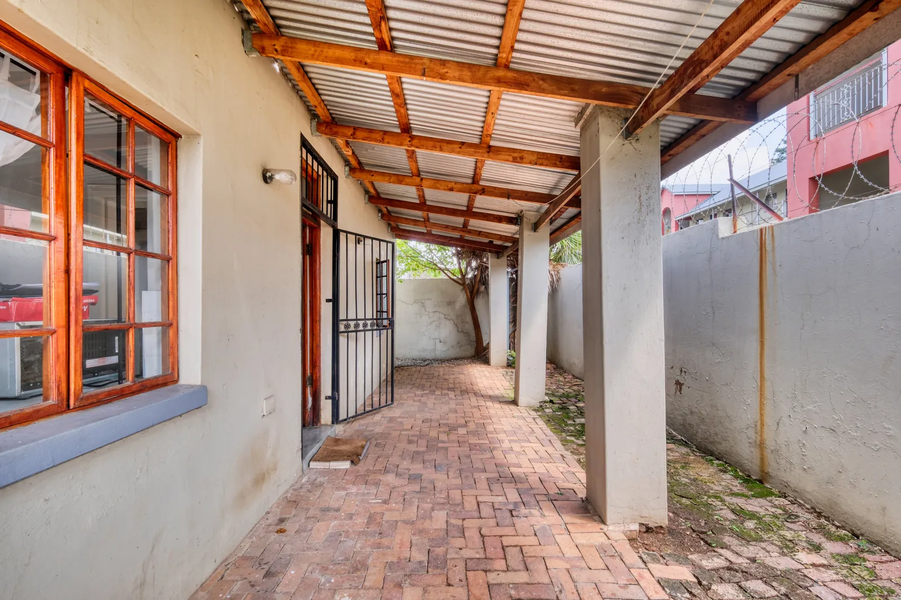

Estruturas
em madeira
Apresente o espaço e a estrutura que deseja. Consulte as soluções de carpintaria disponíveis, os materiais e o escopo do serviço para o seu caso.
Consultar meu projeto ↗
Estruturas em madeira para o seu espaço. A Espindola Carpintaria atende a Grande Florianópolis e a Serra Catarinense.
Imagem ilustrativa de banco.

Carpintaria em madeira · Imagem ilustrativa
Estruturas em madeira que valorizam cada metro quadrado.
A Espindola Carpintaria está em São Sebastião, Palhoça. A madeira é o ponto de partida para estruturas que fazem parte dos ambientes e do jeito de viver na Grande Florianópolis e na Serra Catarinense.
Tem uma ideia para seu imóvel? Conte o que deseja construir e converse sobre as possibilidades para o espaço. A visita técnica e a consulta de orçamento são os caminhos para começar.
Conversar com a Espindola ↗Do primeiro contato à definição da necessidade, converse sobre o que faz sentido para o seu projeto em madeira.
Apresente o espaço e a estrutura que deseja. Consulte as soluções de carpintaria disponíveis, os materiais e o escopo do serviço para o seu caso.
Consultar meu projeto ↗Solicite uma visita para conversar sobre o local e a necessidade. Confirme cobertura, agenda e condições de deslocamento antes de combinar o atendimento.
Consultar visita ↗Informe a cidade, descreva o que pretende fazer e compartilhe referências ou medidas, se tiver. A Espindola orienta quais informações são necessárias para avaliar sua solicitação.
Pedir orçamento ↗Coberturas, linhas e texturas para inspirar a conversa. As fotografias abaixo são de banco e não representam obras realizadas pela Espindola.

Linhas de madeira que marcam o ambiente.
O universo da carpintaria em uma construção.

A presença da madeira em uma área coberta.
Grande Florianópolis
e Serra Catarinense.
Com localização em São Sebastião, Palhoça (SC), a Espindola atende essas regiões. Envie sua cidade e bairro para consultar disponibilidade e combinar uma visita.
Mapa de referência de Palhoça. Consulte o local de atendimento diretamente com a empresa.
Abrir região no Google Maps ↗Agende uma visita técnica ou consulte seu orçamento. Escolha o assunto e prepare uma mensagem para continuar a conversa.
São Sebastião · Palhoça, SC
Você revisa e envia no WhatsApp. A Espindola confirma agenda, serviços e condições do orçamento.
Onde a Espindola atende? Na Grande Florianópolis e na Serra Catarinense. Informe cidade e bairro para confirmar cobertura e disponibilidade no seu endereço.
Como agendar uma visita técnica? Entre em contato pelo WhatsApp e apresente sua necessidade. Confirme com a empresa a agenda e as condições para realizar a visita.
O que preciso para pedir orçamento? Comece pela localização e uma descrição do que pretende fazer. Fotos, referências e medidas disponíveis podem ser compartilhadas na conversa pelo WhatsApp.
Quais estruturas podem ser feitas? Converse sobre o seu projeto em madeira. A Espindola confirma as soluções disponíveis, os materiais e o escopo adequado à solicitação.
As fotos são obras da empresa? Esta página usa referências ilustrativas de banco. Solicite à Espindola informações e imagens dos serviços próprios disponíveis.
Como consultar prazo e valor? As condições dependem do serviço e são informadas durante o contato. Combine diretamente com a empresa os valores, materiais, prazo e horários de atendimento.